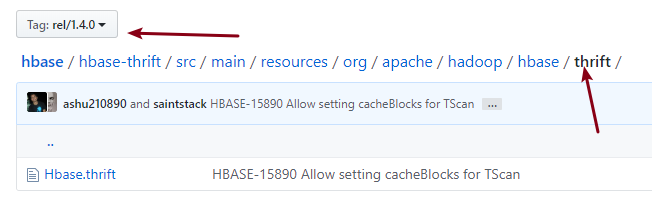
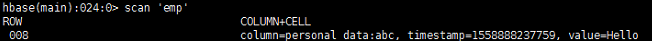
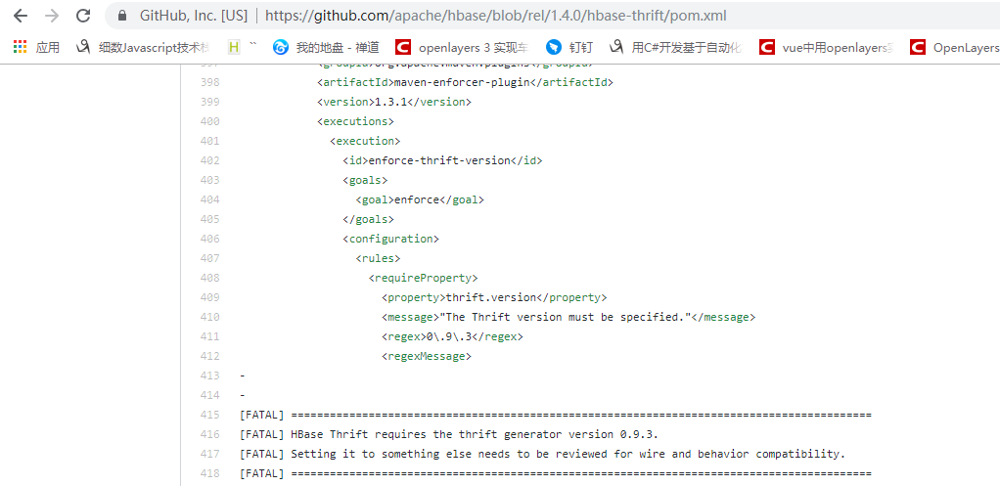

近期着手的一个项目需要将我方数据存储到Hadoop的大数据环境，由于本人是.net平台的开发者，没有怎么接触过大数据（因为他实在是太高大尚了）。但还好baidu, google后，还是很找到了解决办法，就是C#写数据到hbase，然后大数据开发者在从hbase读取数据进行多维度处理，如将一部分历史数据转移到hive，或者是将一部分数据推送到机器学习库进行学习。

注意Hbase的版本一定要与运行的Hbase对应。
请选择thrift，而不是thrift2，原因thrift接口看上更为好用
thrift生成代码可以参考的我《半小时入Thrift》
输入如下命令：
hbase-daemon.sh start thrift
hbase-daemons.sh start thrift (集群版本)默认的thrift端口是9090，可以在hbase-site.xml配置文件中修改默认端口。
var transport = new TSocket("10.34.51.62", 9090);
TProtocol protocol = new TBinaryProtocol(transport);
var client = new Hbase.Client(protocol);
transport.Open();
var tabls = client.getTableNames();
foreach(var t in tabls)
{
Console.WriteLine(Encoding.Default.GetString(t));
}
//写
Mutation mutation = new Mutation();
mutation.Column = Encoding.UTF8.GetBytes("personal_data:abc");
mutation.Value = Encoding.UTF8.GetBytes("Hello");
client.mutateRow(Encoding.UTF8.GetBytes("emp"), Encoding.UTF8.GetBytes("008"), new List<Mutation> { mutation }, null);
Console.WriteLine("add success");
var row = client.getRow(Encoding.UTF8.GetBytes("emp"), Encoding.UTF8.GetBytes("008"), null);
foreach (var r in row)
{
Console.WriteLine(Encoding.UTF8.GetString(r.Row));
foreach(var c in r.Columns)
{
Console.WriteLine("-- " + Encoding.UTF8.GetString(c.Key) + ":" + Encoding.UTF8.GetString(c.Value.Value));
}
}
client.deleteAllRow(Encoding.UTF8.GetBytes("emp"), Encoding.UTF8.GetBytes("008"), null);
Console.WriteLine("delete success");
Console.ReadKey();
transport.Close();上述代码实现了hbase写入，读取，删除等功用。

成功写入。
1. 注意选择thrift和版本，通过查看maven的依赖获得

2. 使用thirft版本，而不是thrift2
3. hbase的rowKey+列Key相同时，会对数据进行修改